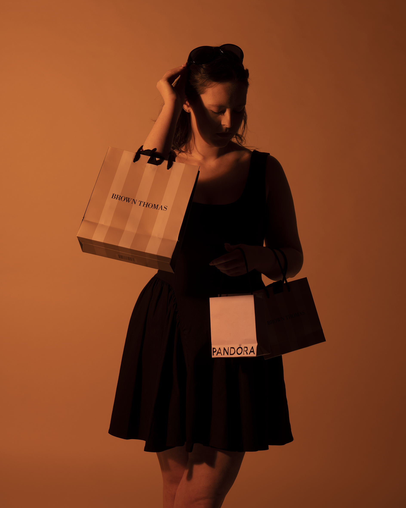
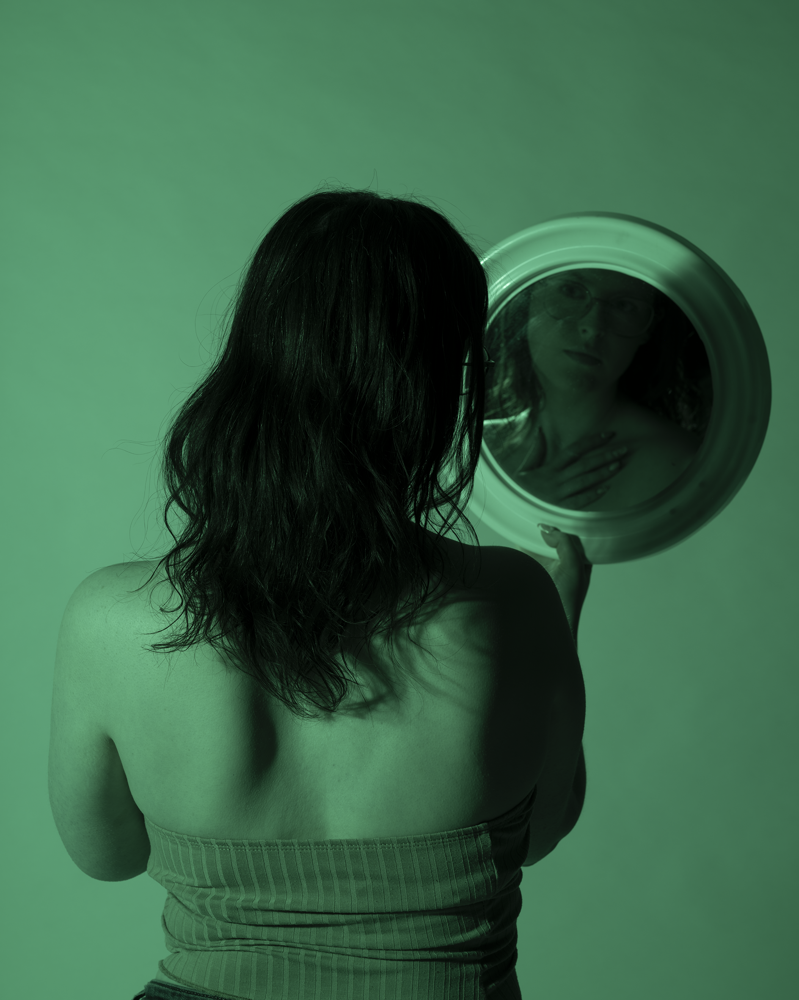

Portraits
Studio and environmental portrait photography focused on identity, emotion, and visual storytelling.


A selection of portrait, editorial, and visual storytelling work.
Studio and environmental portrait photography focused on identity, emotion, and visual storytelling.
Fashion-inspired imagery combining theme, colour, texture, and movement.





Experimental photography and analogue-inspired visual work.